Step 8: Deploy Project to Heroku
Contents
Step 8: Deploy Project to Heroku¶
Set Up Repository to Work with Heroku¶
Open the project in IntelliJ and right-click on the project outermost folder and select New -> File:
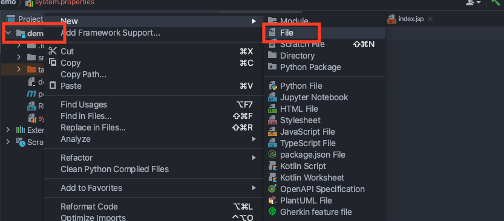
Title the file ‘system.properties’:
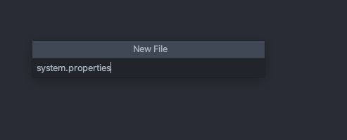
Enter the following into the file and save it:
java.runtime.version=11
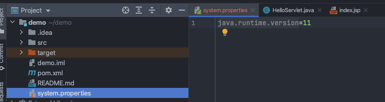
Once again, right-click on the project outermost folder and select New -> File:
Title the new file ‘Procfile’:
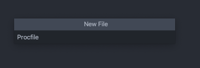
If it prompts you to register file type association, select the first option and press OK:
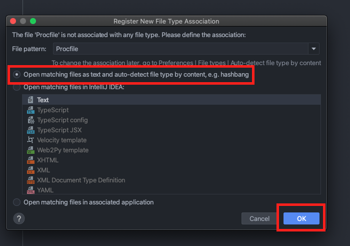
In the file, enter:
web: java $JAVA_OPTS -jar target/dependency/webapp-runner.jar $WEBAPP_RUNNER_OPTS --port $PORT target/demo-1.0-SNAPSHOT.war
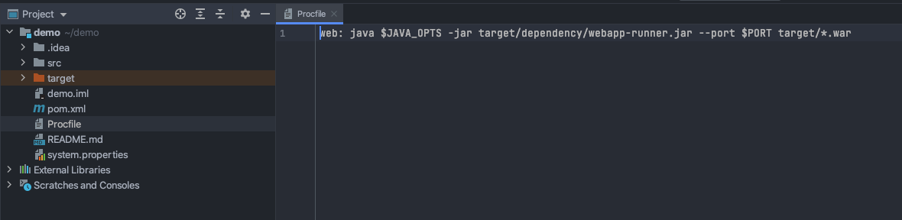
Deploy to Heroku¶
Caution
There are a number of ways to deploy the application to Heroku. You will need to decide as a team which option to choose.
These methods are not cross-compatible - you cannot deploy with more than one option without making changes to the project and the repository.
Option 1: Deploy From GitHub
Note
Only one team member needs to set this up.
Hooking Heroku into your GitHub repository is an easy choice and reduces work for all team members, as it does not require them to set up anything for deployment. If you choose to hook Heroku to the main branch of the repository, it will rebuild the application on every push to main.
Caution
Be careful about pushing changes to GitHub after project submission. Changes will be automatically deployed and might impact the markers’ ability to mark your project (i.e., if it introduces a new bug).
First create a Heroku account here. Only one team member needs to do this.
Select Create New Application:
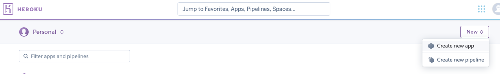
Enter an application name and select Create App:
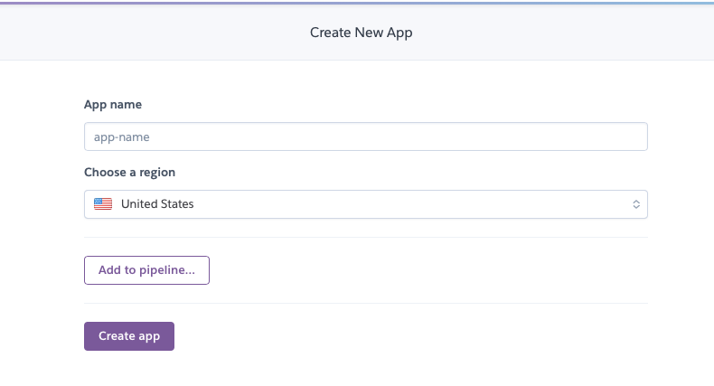
Update the pom.xml file to add the Heroku webapp-runner dependency:
<artifactItem>
<groupId>com.heroku</groupId>
<artifactId>webapp-runner</artifactId>
<version>9.0.41.0</version>
<destFileName>webapp-runner.jar</destFileName>
<artifactItem>
The full file is below for ease. You should not paste the entire file as it will overwrite your local properties.
pom.xml File
<?xml version="1.0" encoding="UTF-8"?>
<project xmlns="http://maven.apache.org/POM/4.0.0"
xmlns:xsi="http://www.w3.org/2001/XMLSchema-instance"
xsi:schemaLocation="http://maven.apache.org/POM/4.0.0 https://maven.apache.org/xsd/maven-4.0.0.xsd">
<modelVersion>4.0.0</modelVersion>
<groupId>com.example</groupId>
<artifactId>demo</artifactId>
<version>1.0-SNAPSHOT</version>
<name>demo</name>
<packaging>war</packaging>
<properties>
<maven.compiler.target>1.8</maven.compiler.target>
<maven.compiler.source>1.8</maven.compiler.source>
<junit.version>5.7.1</junit.version>
</properties>
<dependencies>
<dependency>
<groupId>javax.servlet</groupId>
<artifactId>javax.servlet-api</artifactId>
<version>4.0.1</version>
<scope>provided</scope>
</dependency>
<dependency>
<groupId>org.junit.jupiter</groupId>
<artifactId>junit-jupiter-api</artifactId>
<version>${junit.version}</version>
<scope>test</scope>
</dependency>
<dependency>
<groupId>org.junit.jupiter</groupId>
<artifactId>junit-jupiter-engine</artifactId>
<version>${junit.version}</version>
<scope>test</scope>
</dependency>
</dependencies>
<build>
<plugins>
<plugin>
<groupId>org.apache.maven.plugins</groupId>
<artifactId>maven-dependency-plugin</artifactId>
<executions>
<execution>
<phase>package</phase>
<goals><goal>copy</goal></goals>
<configuration>
<artifactItems>
<artifactItem>
<groupId>com.heroku</groupId>
<artifactId>webapp-runner</artifactId>
<version>9.0.41.0</version>
<destFileName>webapp-runner.jar</destFileName>
</artifactItem>
</artifactItems>
</configuration>
</execution>
</executions>
</plugin>
<plugin>
<groupId>com.heroku.sdk</groupId>
<artifactId>heroku-maven-plugin</artifactId>
<version>3.0.3</version>
</plugin>
</plugins>
</build>
</project>
Push this change to the repository.
Login to Heroku and select the Application:
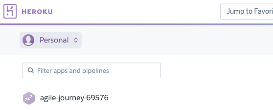
Select Deploy:
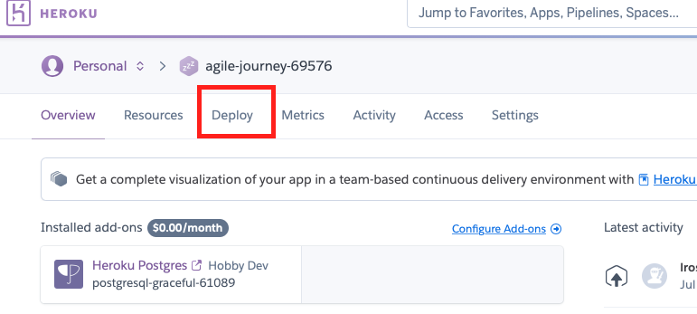
Select Connect to GitHub and follow the prompts:
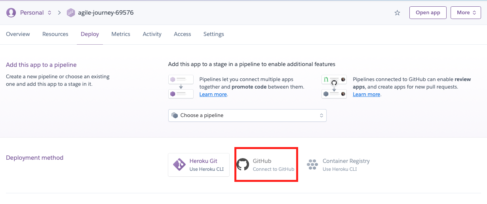
Once connected, select drop-down menu and choose the GitHub Classroom SWEN900072021:
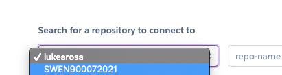
Important
You must be Admin of the project repository in order for Heroku to be able to connect to it.
Select Search. Once Heroku finds the repository, select Connect:
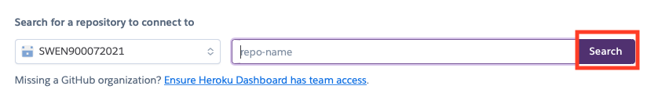
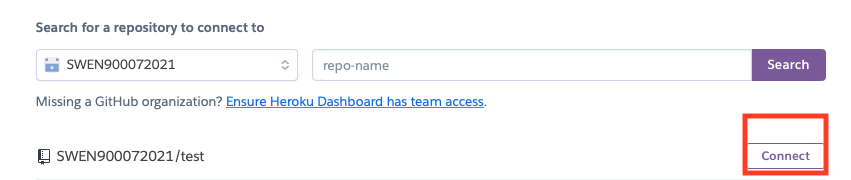
Follow the prompts to enable automatic deployment and select a branch you wish to deploy (this is up to your team to decide):
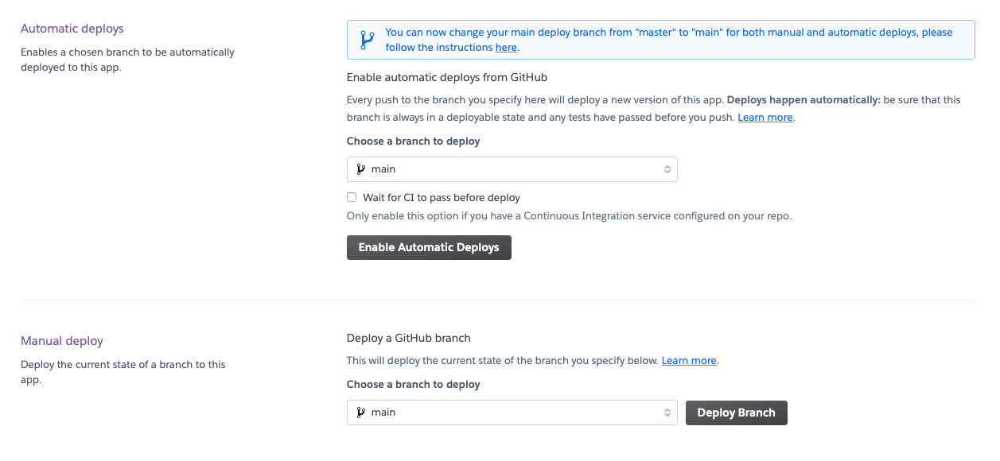
It will take up a minute or two to build, but once done, select View to view your application:
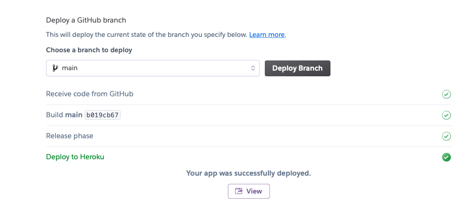
Now the code on the branch selected will be deployed to Heroku.
Option 2: Deploy From Terminal/IDE
Important
All team members should set this up in order to deploy the application.
Download and install the Heroku CLI:
Resource
Before we can deploy to Heroku, we must create a Heroku application. This part should only be done by one team member (each team member does not need to have their own Heroku application).
Once you have installed the Heroku CLI, open a terminal and log into Heroku:
heroku login
Before the project can be deployed to Heroku, we need to add a Heroku Maven dependency. The code to add to the pom file is:
<plugin>
<groupId>com.heroku.sdk</groupId>
<artifactId>heroku-maven-plugin</artifactId>
<version>3.0.3</version>
</plugin>
The full file is below for ease. You should not paste the entire file as it will overwrite your local properties.
pom.xml File
<?xml version="1.0" encoding="UTF-8"?>
<project xmlns="http://maven.apache.org/POM/4.0.0"
xmlns:xsi="http://www.w3.org/2001/XMLSchema-instance"
xsi:schemaLocation="http://maven.apache.org/POM/4.0.0 https://maven.apache.org/xsd/maven-4.0.0.xsd">
<modelVersion>4.0.0</modelVersion>
<groupId>com.example</groupId>
<artifactId>demo</artifactId>
<version>1.0-SNAPSHOT</version>
<name>demo</name>
<packaging>war</packaging>
<properties>
<maven.compiler.target>1.8</maven.compiler.target>
<maven.compiler.source>1.8</maven.compiler.source>
<junit.version>5.7.1</junit.version>
</properties>
<dependencies>
<dependency>
<groupId>javax.servlet</groupId>
<artifactId>javax.servlet-api</artifactId>
<version>4.0.1</version>
<scope>provided</scope>
</dependency>
<dependency>
<groupId>org.junit.jupiter</groupId>
<artifactId>junit-jupiter-api</artifactId>
<version>${junit.version}</version>
<scope>test</scope>
</dependency>
<dependency>
<groupId>org.junit.jupiter</groupId>
<artifactId>junit-jupiter-engine</artifactId>
<version>${junit.version}</version>
<scope>test</scope>
</dependency>
</dependencies>
<build>
<plugins>
<plugin>
<groupId>org.apache.maven.plugins</groupId>
<artifactId>maven-war-plugin</artifactId>
<version>3.3.1</version>
</plugin>
<plugin>
<groupId>com.heroku.sdk</groupId>
<artifactId>heroku-maven-plugin</artifactId>
<version>3.0.3</version>
</plugin>
</plugins>
</build>
</project>
Open a terminal window again, navigate to the root of the Git repository.
To create the repository as a Heroku application, enter:
heroku create
This will create the application on Heroku:
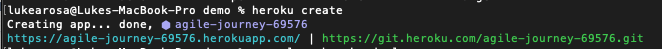
Note
You can rename the application (and change the URL) by logging into Heroku and going to settings.
To deploy it to the URL above, enter the following into terminal:
mvn clean heroku:deploy-war
It will take a few minutes to build:
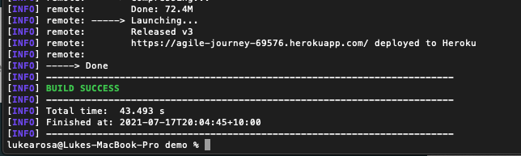
Now you can go to the URL above, and your project will be deployed.
Important
Each time you want to deploy to Heroku, you need to run these same commands.
To make life easier, you can create a Heroku configuration in IntelliJ to allow you to deploy changes to the application with only one click. This is entirely optional.
Open the project in IntelliJ and select Add Configuration:
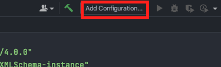
Select the icon for Add and then scroll down and select Maven:
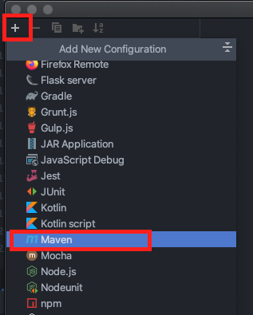
Enter the following into the Command Line:
heroku:deploy-war
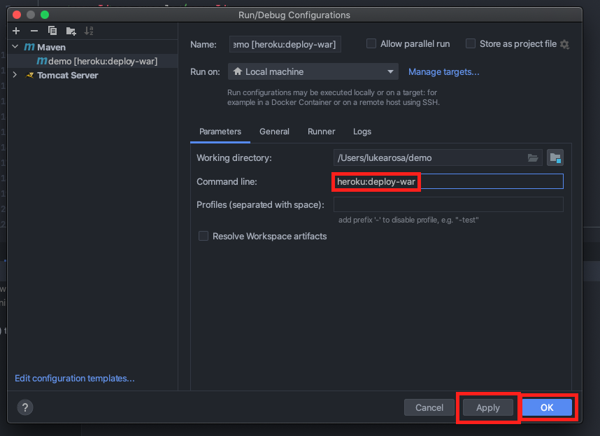
Select Run:
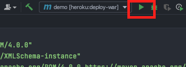
It will take a few minutes to build, but once done, the application will be viewable at the URL:
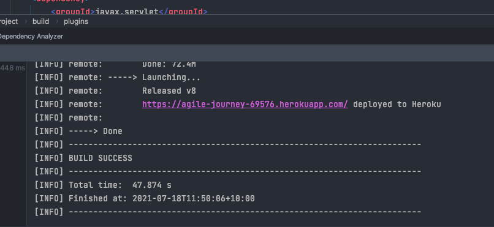
Now everytime you make changes and want to deploy, you can select Run Configuration.
Option 3: Deploy Using WAR File
This is not covered, but you can find details on the Heroku Developer Centre.
Note
Even after deploying to Heroku, you can still use the local Tomcat configuration created in Step 4: Setup PostgreSQL to deploy changes locally before pushing to Heroku.
Set Up the PostgreSQL Database¶
We can no longer use the local instance of the PostgreSQL database, so we have to migrate to a Heroku managed PostgreSQL instance.
Log into Heroku and select the application. Then select Resources:
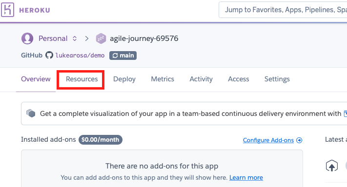
Search and select Heroku PostgreSQL:
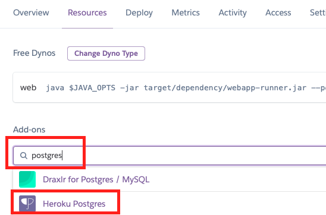
Select Submit Order Form (make sure you have selected the free hobby-development database):
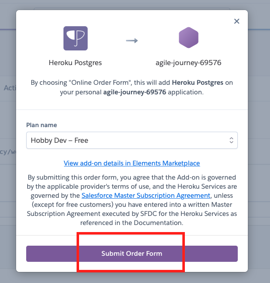
Once it has been added on to the application, launch Heroku Postgres
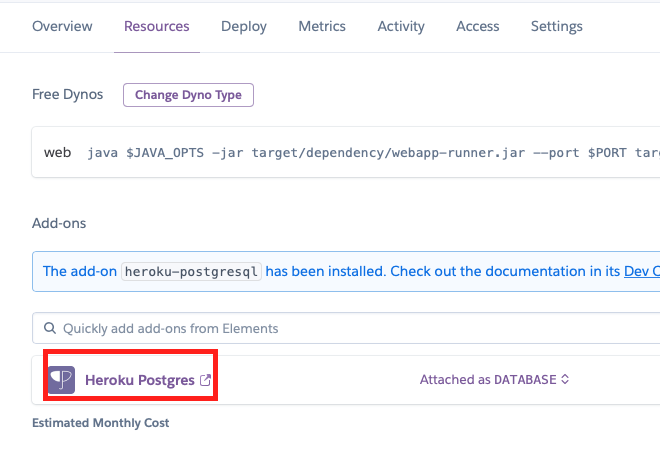
Select Settings:
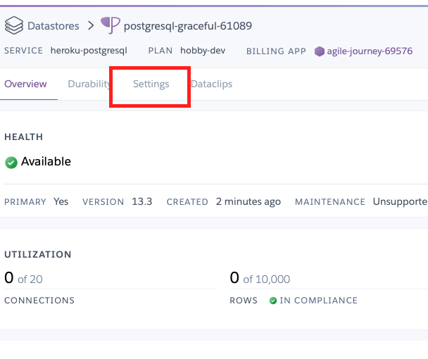
Select View Credentials:
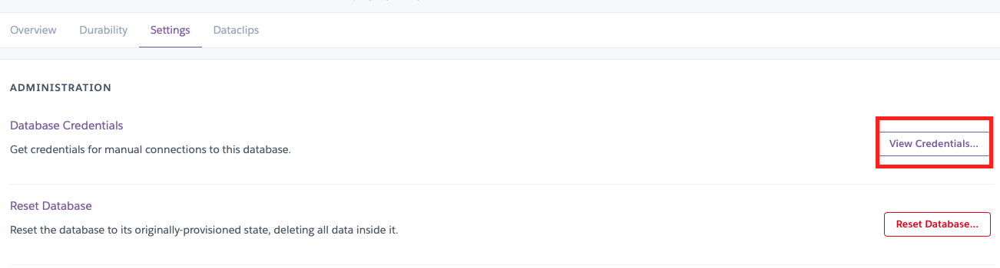
Launch pgAdmin on your computer. Right-click the server and select Create -> Server:
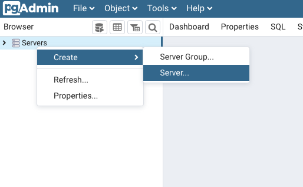
In the pop-up dialog box, enter a name (it does not matter what you choose):
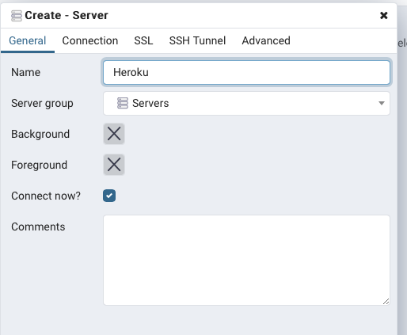
Select the Connection tab and enter the credentials provided by Heroku:
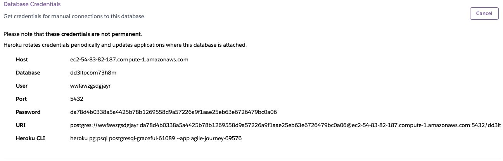
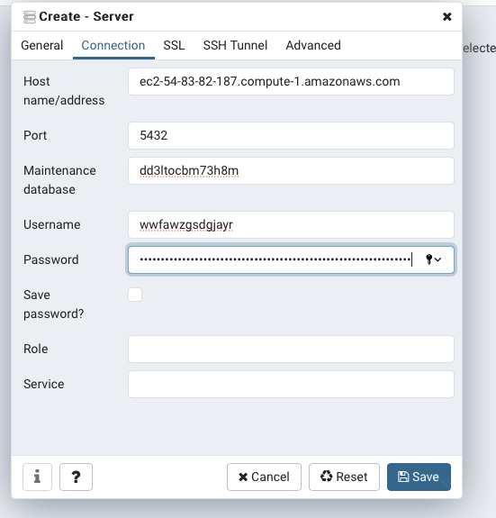
Select the Advanced tab and enter the name of the database in the DB Restriction field. If you do not do this, you will see thousands of other databases managed by Heroku. Select Save:
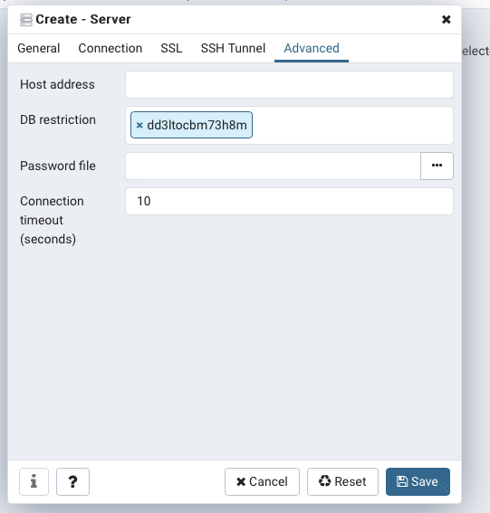
In order to test the connection, select the newly connected database and right-click on Tables and select Query Tool:
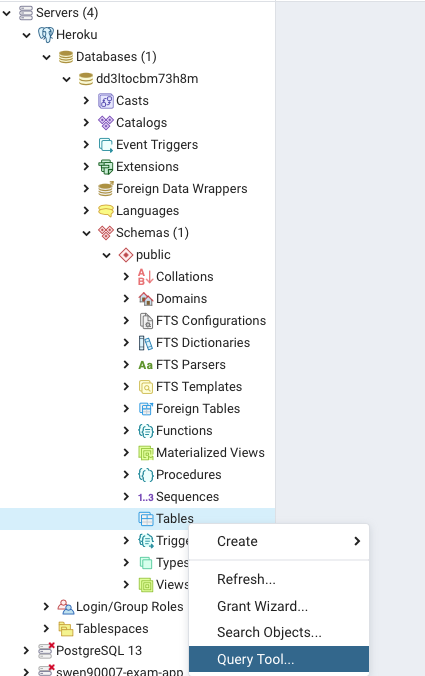
Enter a random SQL query and click the Run icon:
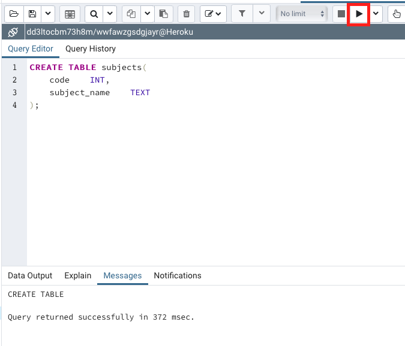
It should return a successful query, and the table should now be visible once you refresh:
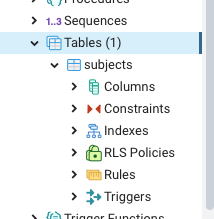